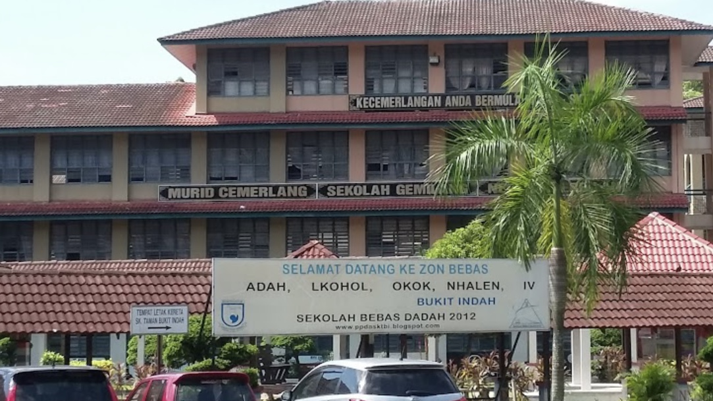
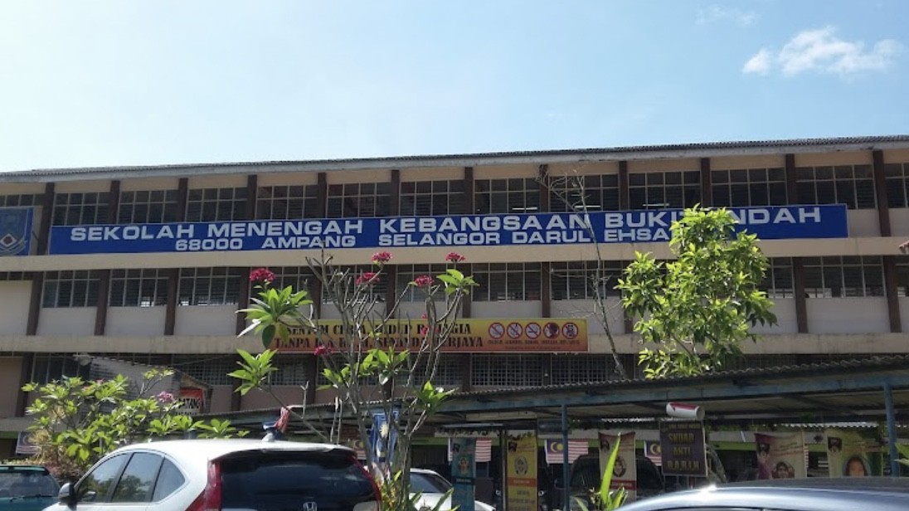
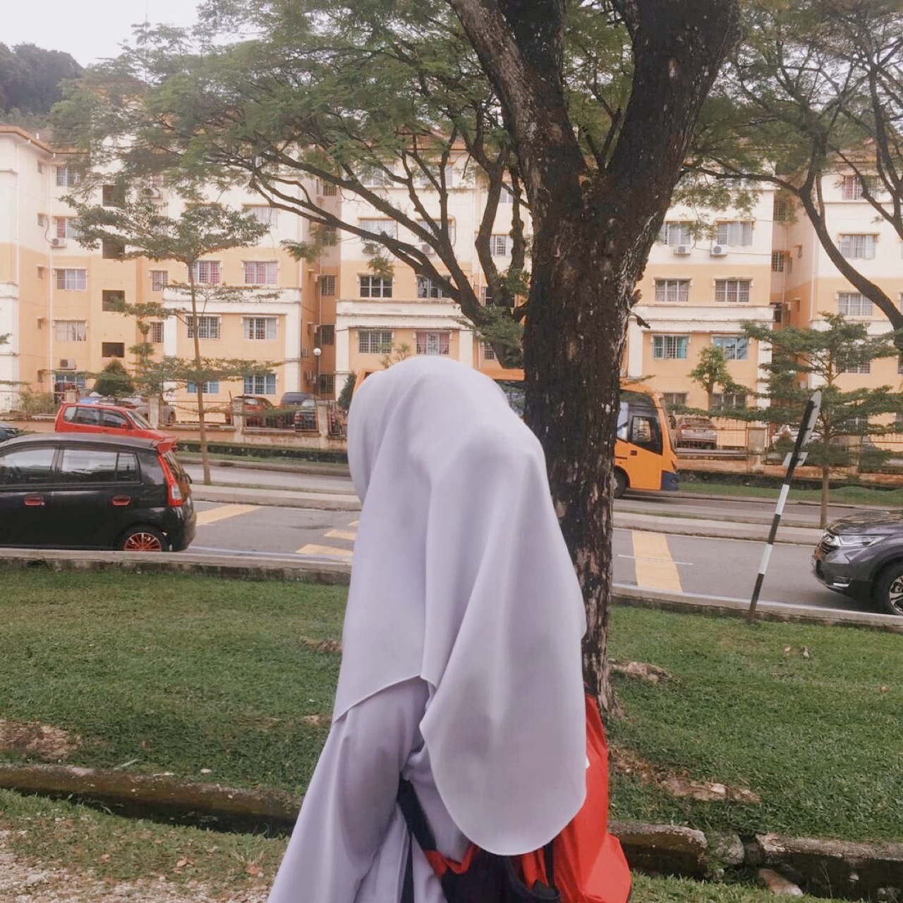
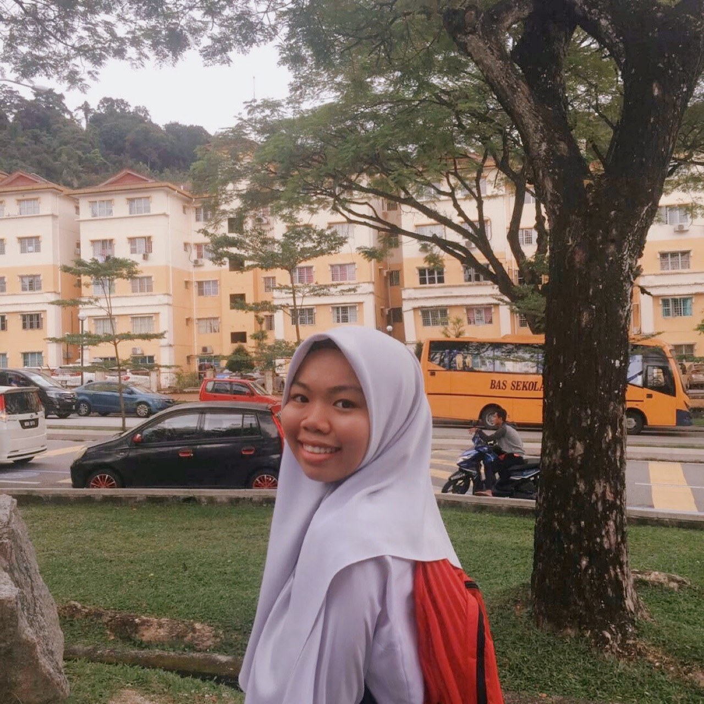
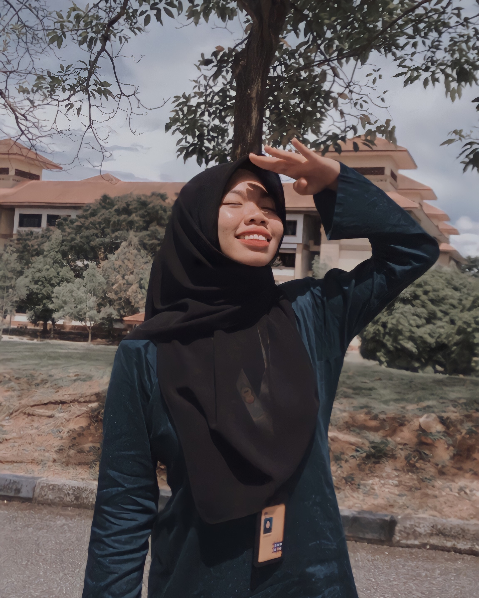
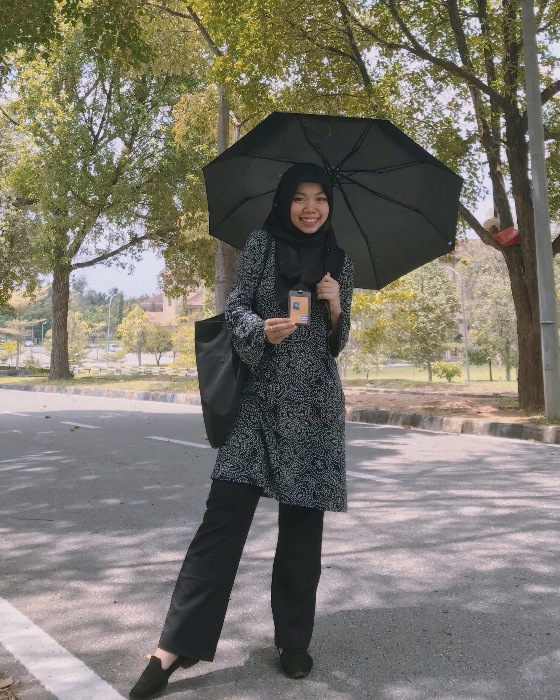

JOHANIES JOSAFIQ |
🌼Home | 🐥Biodata | 🌱Experience | 🎓Education | 💓Family | 🌿Gallery |
|---|
EDUCATION
📍SEKOLAH KEBANGSAAN TAMAN BUKIT INDAH
|  | The name of the school of Sekolah Kebangsaan Taman Bukit Indah is my primary school that i go started from the year of 2009 until 2014. |
📍SEKOLAH MENENGAH TAMAN BUKIT INDAH
|  | After i have done my primary education, I continued my studies to secondary education. The school i went to was known as Sekolah Menengah Kebangsaan Taman Bukit Indah. I studied here from year 2015 to 2019. |
|  |  |
📍UNIVERSITI TEKNOLOGI MARA, CAWANGAN KEDAH
 |
Upon completion of secondary education, I was given sustenance to further my studies to higher education at UiTM Kedah. Here I took a course of Diploma in Library Management. |
|  |  |
| Author: Johanies binti Josafiq |
|---|
| johanieslove@gmail.com |
| Copyright © 2022 Johanies binti Josafiq. All Rights Reserved. |